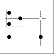
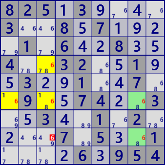
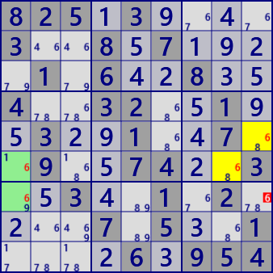
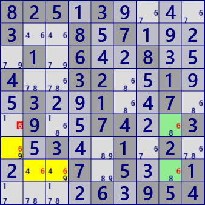
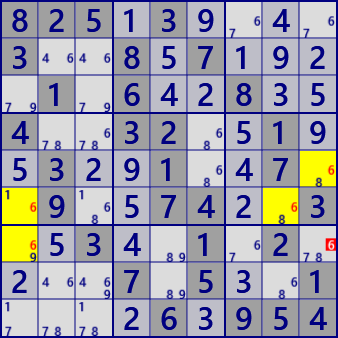
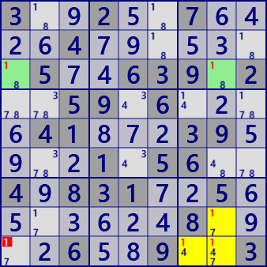

EmptyRectangle
EmptyRectangleは、着目数字に関するブロック内セル配置と強いリンクで構成されるパターン型の解析アルゴリズムです。 次の図にEmptyRectangleのブロック（□）とブロック内のセル配置（）と関係パターンを示します(実線：強いリンク、破線：弱いリンク）。セルが真なら、直接の関係と強いリンクにより、ブロック内のセル（）はいずれも偽となります。 つまり、のセル群の配置の場合、セルはLockedにあり、セルから候補数字が除外されます。 EmptyRectangle(ER)の名称は、着目するブロックから点線が通過するセルを除く4セルには着目数字がない、ことに由来します。

EmptyRectangleの解析アルゴリズムは、上の図を作る手順とおりです。 まずは図を十分に理解するのがよいでしょう。
- 着目数字Xの設定
- 着目ブロックの選択
- 着目ブロック内の軸となるセルの選択
- 軸セルの行・列を除くと、着目ブロック内にERができることを確認
- 着目ブロック外に強いリンクを探す
- 着目ブロックの軸、強いリンクと 四角形を形成する位置にセルを探す。
EmptyRectangleの例を示します。全て同じ問題の同じ場面での異なるEmptyRectangleです。
下段中央も同じ問題の同じ場面ですが、適用しているアルゴリズムはSkyscraperです。異なるアルゴリズムの適用ですが、上段中央と同じセルで候補が除外されます。






825.3....3..8.7....1.6..8..4..32..1..3..1..7..9..74..3..3..1.2....7.5..1....6.954